Building a free cloud storage system w/ Raspberry Pi 4
Here is the guide I followed for the throughout this project: Link to the YouTube video
One day I wondered, as one does, where are my files and data saved when I use a cloud storage service? What is the cloud? I then thought, well it's just someone else's PC! Can I make that myself?
And so I started looking for materials to help me build my own cloud storage service!
Overview of the steps
To be able to make this work, I needed the following things:
- Hardware: a heart to run the system (small pc in my case), a storage device
- An application for easily transferring files back and forth (Nextcloud)
- A way to connect to the system through WAN (Wide Area Network, the Internet C: ) (Tailscale)
The steps are briefly the following: gathering the hardware, writing the OS to the Pi, connecting to the Pi and configuring memory setting
Quick jump to different parts of the project:
Step 0
Step 1
Step 2
Step 3
Step 4
Step 5
Step 6
Step 0: Gathering the hardware needed for the cloud storage
For the hardware, I chose the following components (disconnected to the power on the left and connected on the right):


The hardware in the picture (from left to right):
- 4TB HDD from Seagate
- Raspberry Pi 4 with a heat sink and 2 fans
- a 64GB SD card
Step 1: Writing the OS (operating system) on the Raspberry Pi
We of course need an operating system for the Pi, and for this project I decided to go with the Raspberry Pi OS. My reasoning was that because this is my first time using a Pi and my first project, I should pick something made for the Pi.
In order to write the OS into the Pi, we need to first download an imager from the main website. Then the SD card needs to be connected to the PC so we can write the OS to it. After downloading and opening the software, we are met with the following screen:
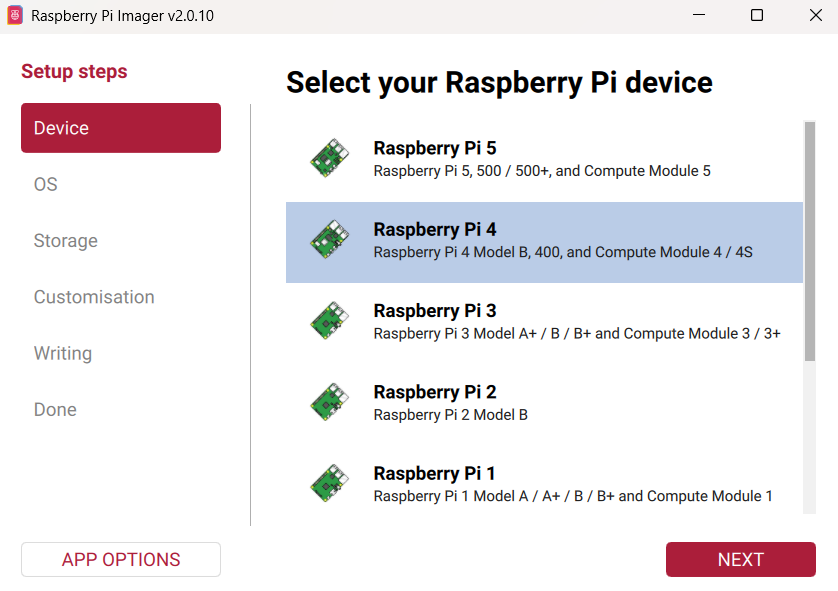
From here we choose the correct configurations depending on the device at hand. My configuration (what I chose) looked like the following:
| Device: | Raspberry Pi 4 |
| OS: | Latest version of Raspberry Pi OS (64-bit) |
| Storage: | The micro SD card I used |
| Hostname: | picloud |
| User: | Created a user |
| Wi-Fi: | Connected to Wi-Fi |
| Remote access: | Enabled; Authentication mechanism: Use password authentication |
| Raspberry Pi Connect: | Disabled |
| Writing: | Clicked WRITE when everything looked correct |
Step 2: Connecting to the Pi and configuring a memory setting
Let's first disconnect the SD card from the PC, connect it to the Pi and power on the Pi. Now we connect to the Pi using SSH (Secure SHell):
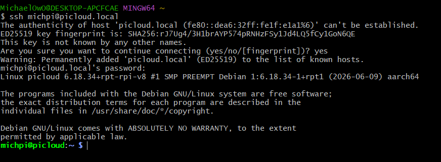
After connecting we have to change the memory setting so that Nextcloud will work well with our Pi.
The command to configure the memory: echo "kernel=kernel8.img" | sudo tee -a /boot/firmware/config.txt
The change basically allows our Pi "to operate in full 64-bit mode, providing access to expanded memory addressing and enhanced performance cabapilities" (Link to the referred article about kernel8.img).
After reading about this, I have a feeling its a good configuration for many other projects and tasks as well.
Step 3: Cloning the SD card to another storage device and changing boot order
Since we don't want the SD card to be tied to only this Raspberry Pi (so we can use it in other projects), we will clone the data on another storage device. In my case, it is the 4TB HDD that I have. Regardless of your storage device, you can use this cloning tool modified by Jeff Geerling to achieve this. This tool simply writes all your data from the SD card into whatever other storage device you have connected.
The following command will download the tool to your Pi: curl https://raw.githubusercontent.com/geerlingguy/rpi-clone/master/install | sudo bash
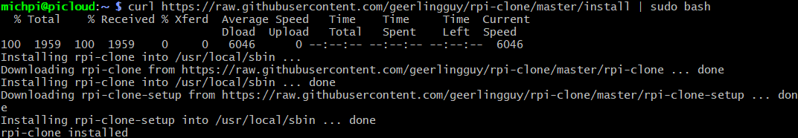
When the downloading is finished, you can run the command to start the cloning: sudo rpi-clone YOUR_DEVICE_NAME_HERE
And to check your device name, run this command: lsblk , and see what your device, that has the correct storage amount is called. Mine was sda.
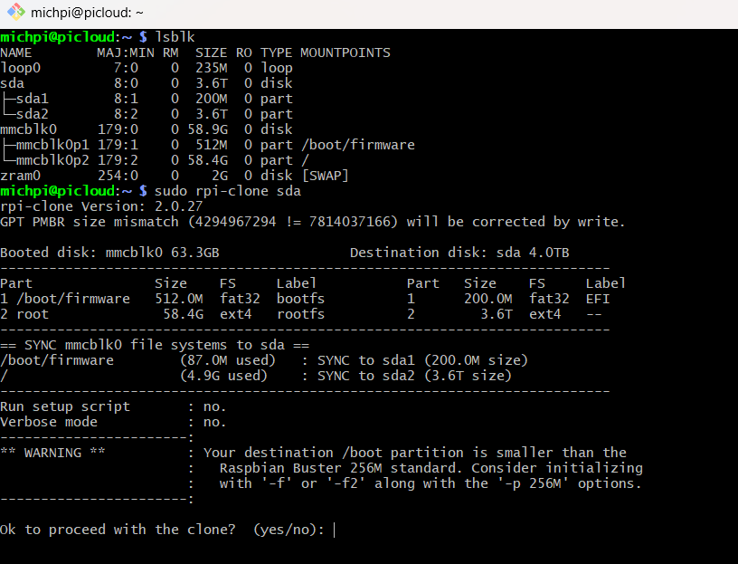
Now we need to change the boot order so we wouldn't rely on the SD card for anything. This will be done by modifying the Pi config, using the sudo raspi-config command.
To change the boot order, we go to 6 Advanced Options --> A4 Boot Order --> B2 NVMe/USB and Enter.
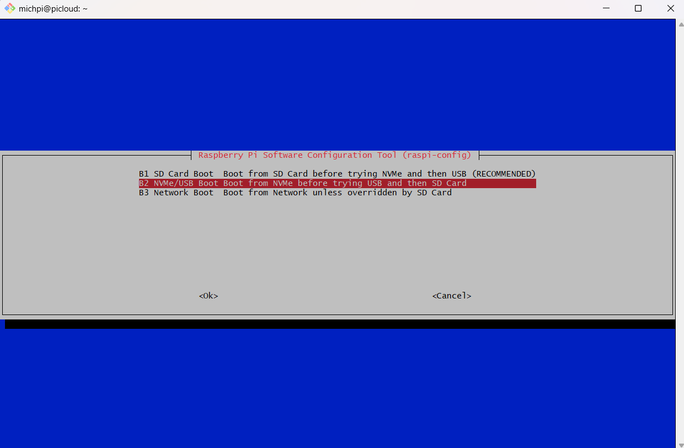
Then we click finish. And instead of agreeing to reboot, we plug out the power cable from the Pi. This is a good place to also take out your SD card if you want to.
Then connect the power cable, and connect to the Pi with SSH again. If this works, you know the cloning process to the storage device worked.
Step 4: Getting Nextcloud to work
Firstly, we need to install Snap package manager in order to install Nextcloud. We do this with the following commands: sudo apt install snapd -y , sudo snap install nextcloud
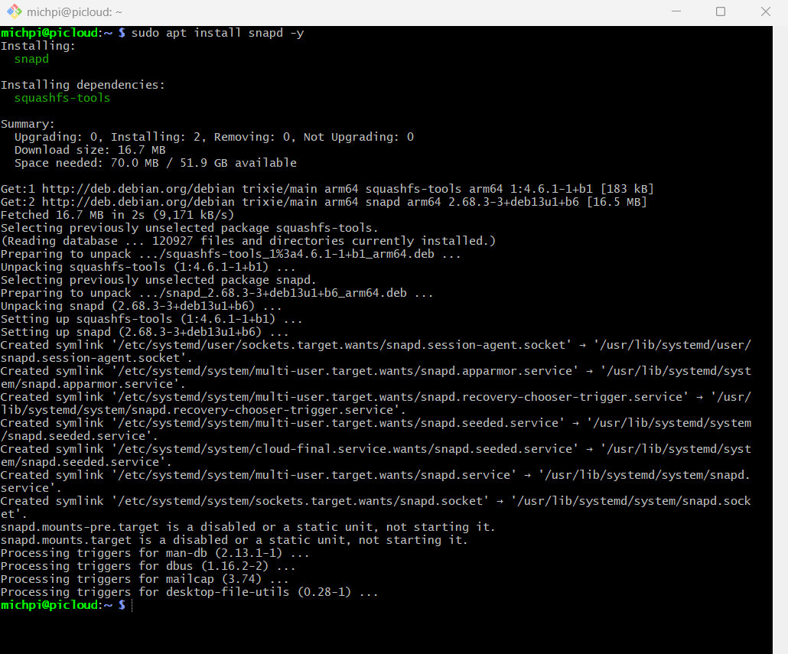
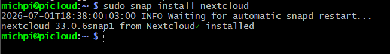
We can then use the command sudo snap services to check if nextcloud services are active (nextcloud.logrotate can be inactive since it is timer-activated).
To access the web dashboard, we'll have to know the IP address of our Pi, which can be done with ifconfig.
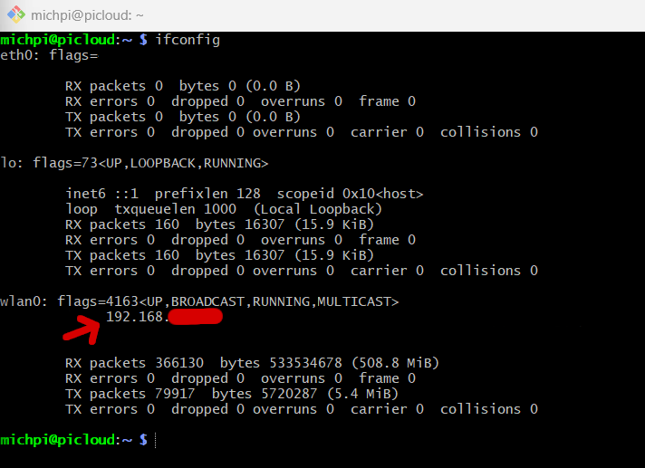
Copy the first IP address of wlan0 IP and paste it in the URL section of your browser. You'll be directed to the initial setup page for your Nextcloud account.
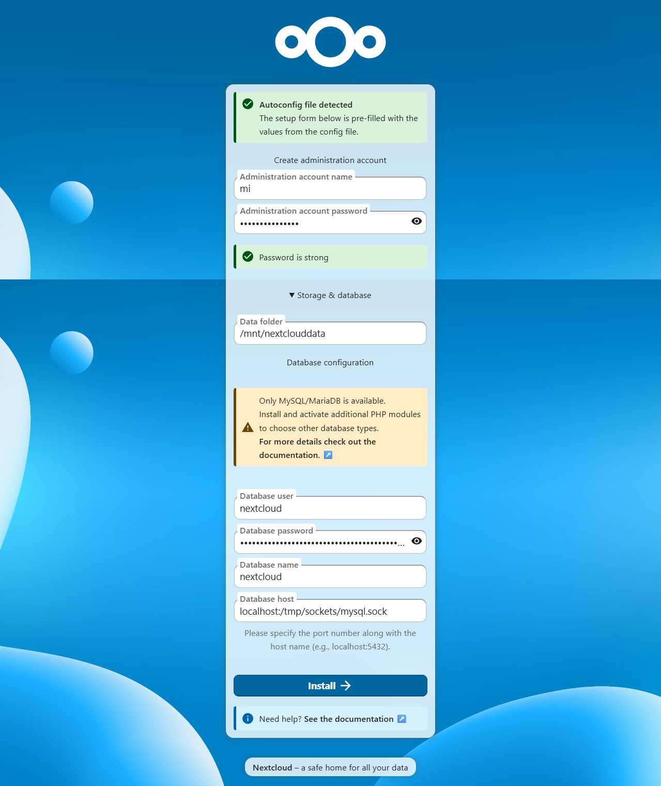
Type in any username for the admin and be sure to create a very secure password since your files will be stored here. I personally also changed the data folder to a custom one but you can go with the default, that ensures less risk of something going wrong.
Now we can sit back and relax for a little bit while Nextcloud is setting up everything for us.
After it is done, it will recommend you apps to install. You can skip this step or install any of the apps you want. Now at the top of the page you can click on files, and there you go! Nextcloud is fully operational :D
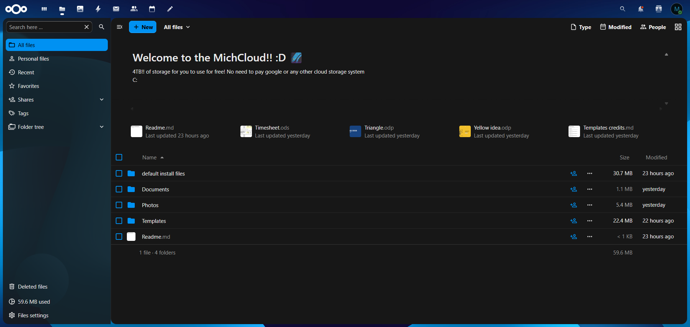
Step 5: Installing and running Tailscale
To go a step further, it is convenient to be able to upload and download files to and from your Nextcloud from anywhere on the internet safely.
Tailscale is a great way to do this. It is basically a VPN that uses zero trust architecture. We're going to install it by going to their website download section, pressing on Linux and pasting and running the command in the terminal.
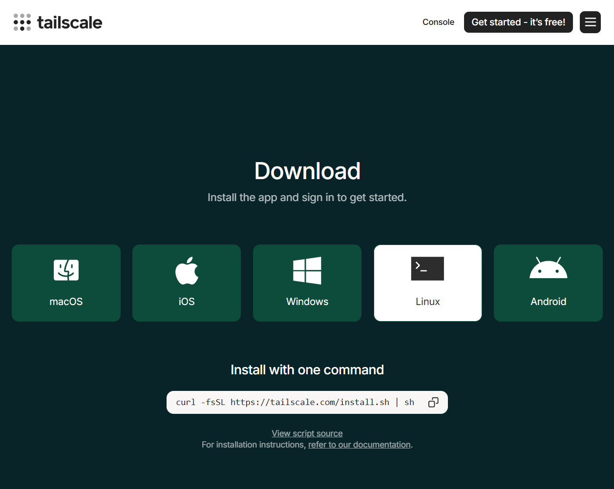
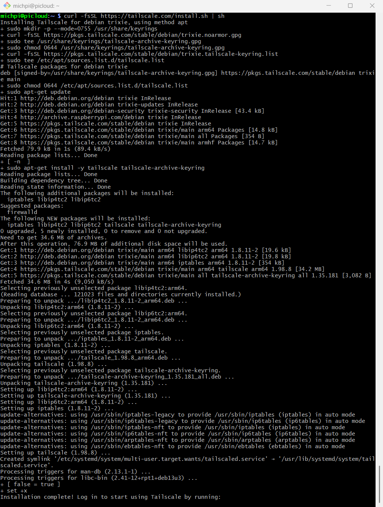
To run the Tailscale process, we will use sudo tailscale up , and afterwards we'll go to the website shown in terminal to authenticate our device.
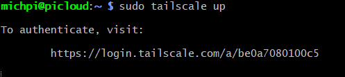
On the website, you can choose the preferred sign-in method. I chose GitHub. After signing in, we click "visit the console".
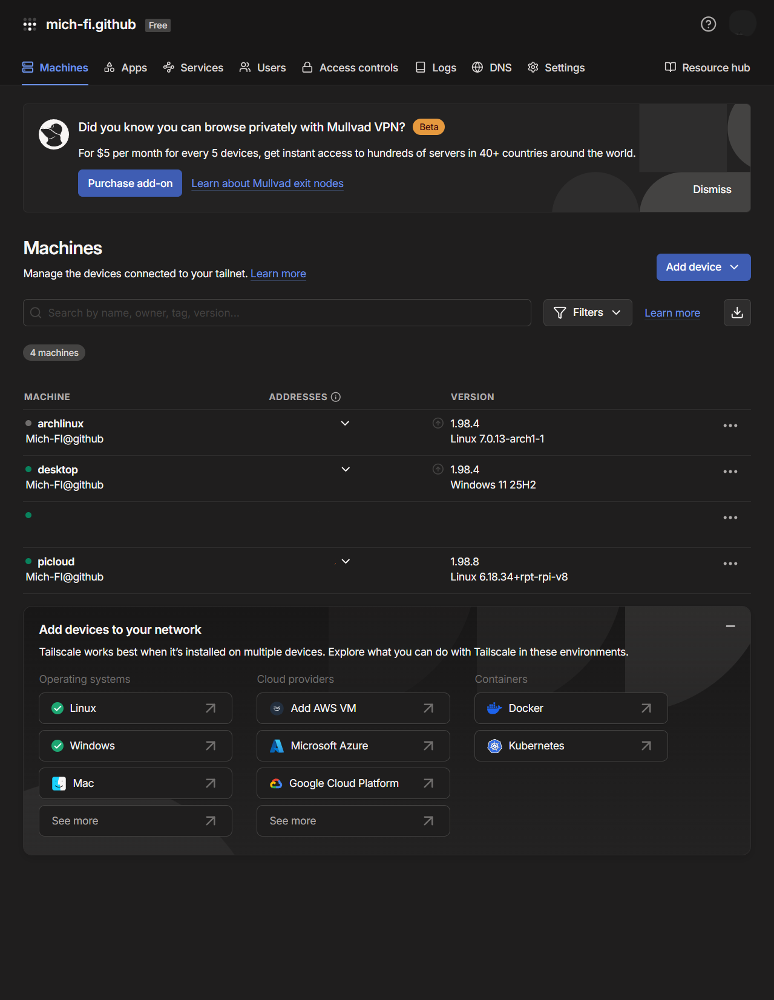
Step 6: Final commands
The next commands are the last ones we need to do on the Pi and these are straight from the YouTube video referred to at the top of this page. Run the following commands on the Pi:
| Command | Meaning |
| sudo snap run nextcloud.occ config:system:set trusted_proxies 0 --value=127.0.0.1 | Trust a proxy: Run Nextcloud's command-line aministrator tool (occ) and set a value (127.0.0.1; IPv4 loopback address meaning this same machine) in the system config in trusted_proxies list as the first entry (index 0). |
| sudo snap run nextcloud.occ config:system:set overwriteprotocol --value=https | Set external protocol as HTTPS: run the same occ tool and set the value as https in the system config in the overwriteprotocol spot; this prevents any non secure http links being generated. |
| sudo snap run nextcloud.occ config:system:set trusted_domains 1 --value="YOUR-TAILSCALE-DNS-NAME" | |
| sudo tailscale serve --bg --https=443 http://localhost:80 |